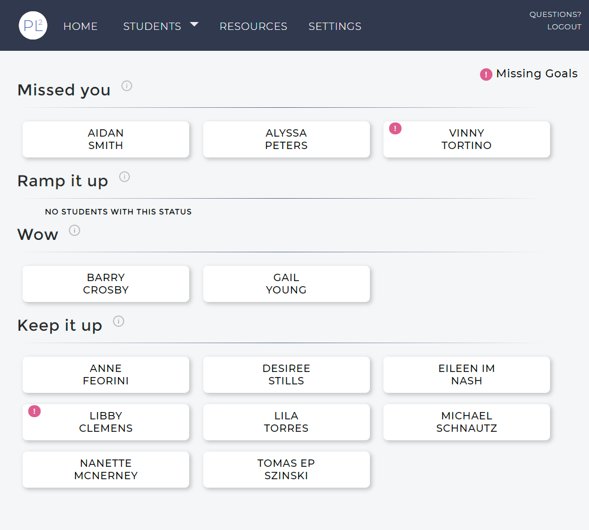
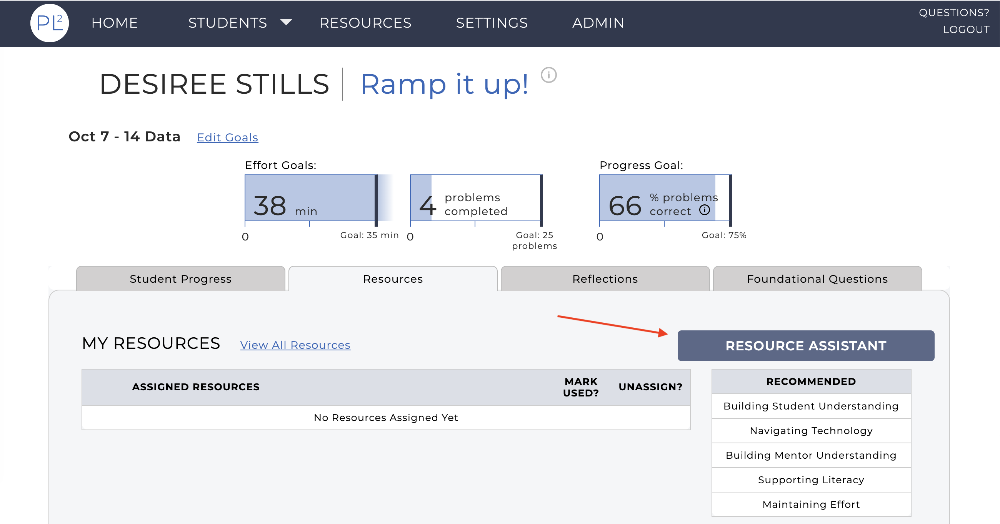
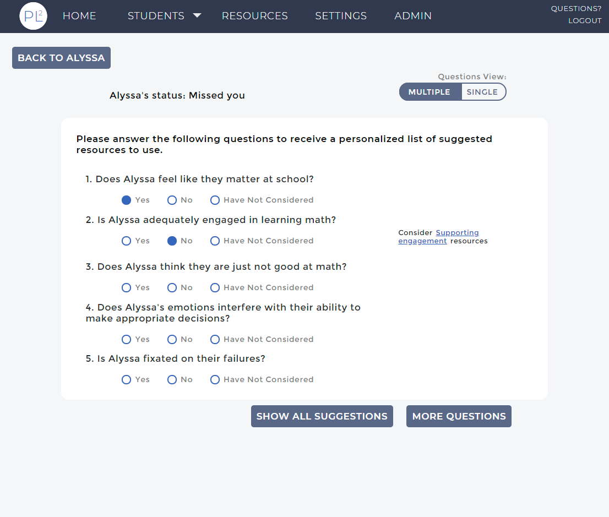
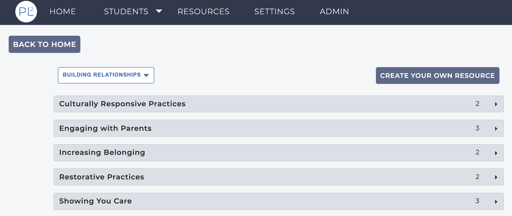
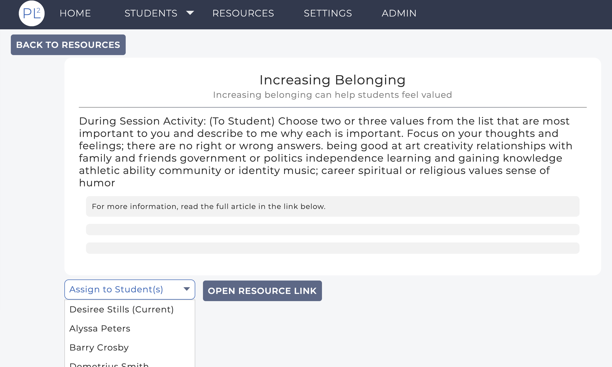
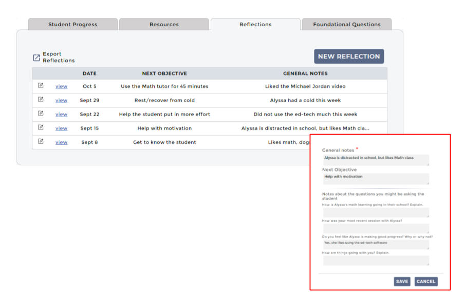
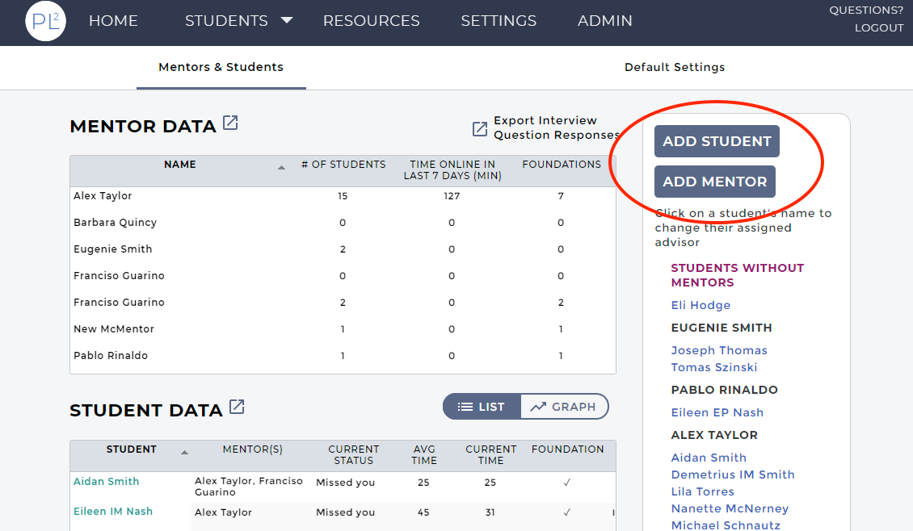
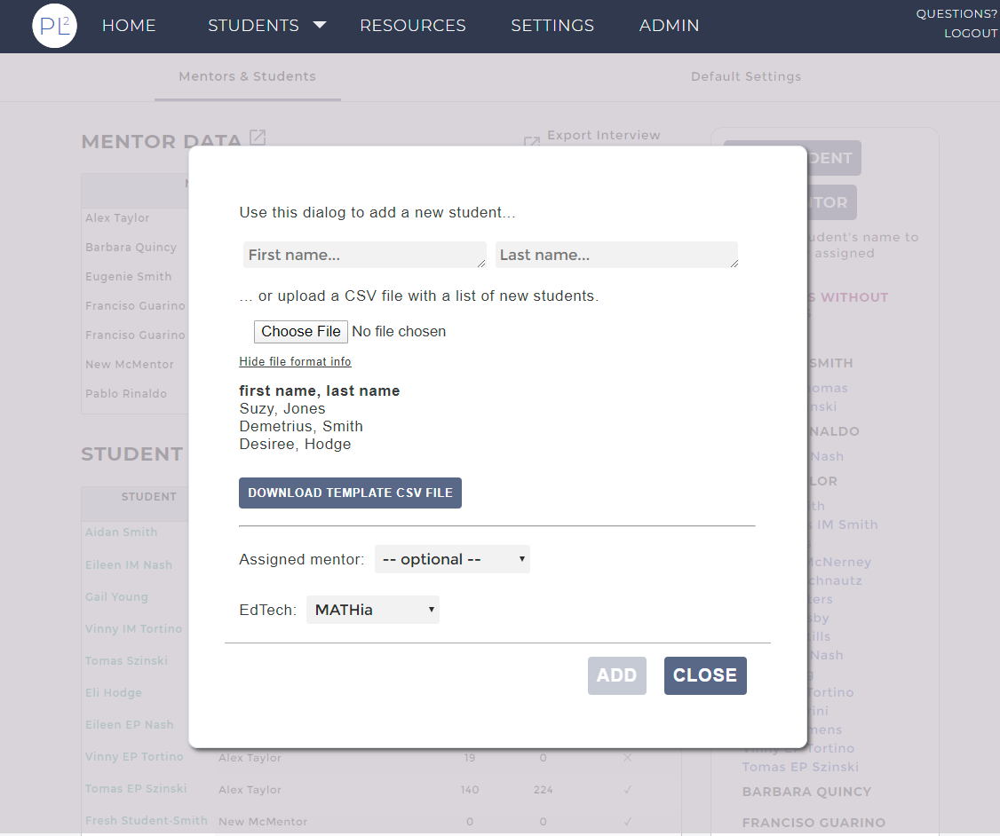
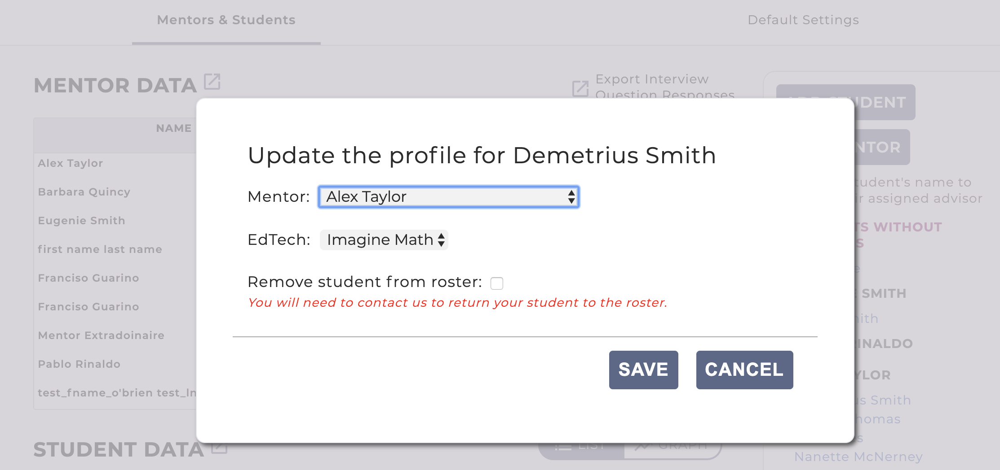
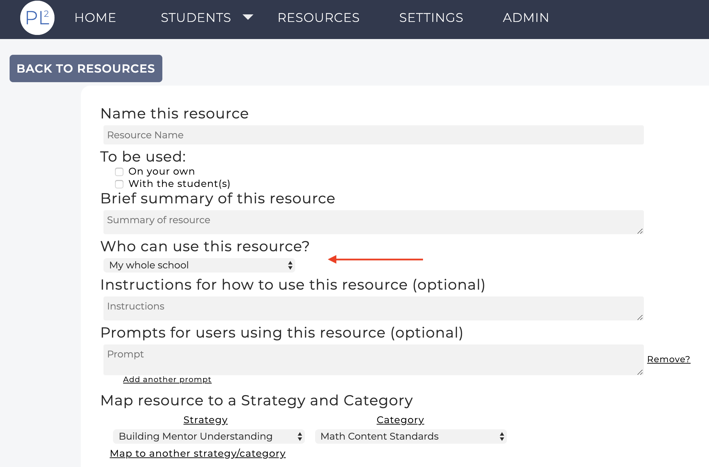

PL2 version 2.0 has been released! Please take a moment to read about the latest features that are now available in the app (
personalizedlearning2.org).
Your home page has been redesigned for better readability. Specifically, the list of students has changed to allow you to view more categories and students without scrolling, and the Resources button has been moved into the navigation bar at the top. For Admins, the Admin Page button has also moved to the header.

This release introduces the Resource Assistant. It can be launched from the 'Resources' tab (previously a list on the left side of the screen) on a student's dashboard.

With the Resource Assistant, you can choose to answer one or more questions about your student, the answers of which are used to guide you to a resource that you can use to help the student.

In this example, the Resource Assistant has suggested the resources in the "Supporting engagement" category might be useful for helping Alyssa become more engaged in learning math. You can choose to explore those resources or answer additional questions and see if other resources are recommended that might be useful for your work with Alyssa.
We have organized our list of resources to make it easier to locate a desired resource. You can also toggle between different strategies (e.g., Building Relationships) by clicking the dropdown list.

When assigning resources to students, you will now see a dropdown list of all the students, with the current student marked. The latter does not apply if you access the resources through the link at the top of the page.

We have removed the notion of sessions from the app. Reflections can be used to make notes of your interactions with the students but can be done at any time and are not tied to a particular meeting with your student. The Reflections tab on the student dashboard provides a list of all previous reflections; the list of reflections can also be exported.

A reflection can include general notes and a next objective as well as the questions previously included with the start and end session notes.
You can now better manage your students and mentors from the Admin dashboard. You can add new students and mentors.

When adding students you can specify their mentor, as well as the EdTech that they will be using. With the app you can add a single student or multiple students by uploading a list of first and last names.

Clicking on a student's name in the Admin dashboard will open a dialog that can be used to edit the student's profile, changing their mentor or EdTech, or even remove them from your roster.

When editing or creating a resource, you can decide automatically whether or not to share it with the mentors. You will be asked "Who can use this resource?", for which you can answer "only me" or "my whole school". Mentors cannot share resources themselves (you would have to share it across mentors), so the question does not appear for them.

The mentor data, in the app and when exported, now includes "time online" for each mentor. The time online is measured in minutes spent engaged with the app over the last seven days.
If you have any questions or feedback for the team we can be reached using the QUESTIONS? link in the navigation bar of the app or via email at
pl2-app-help@lists.andrew.cmu.edu. We would love to hear from you!